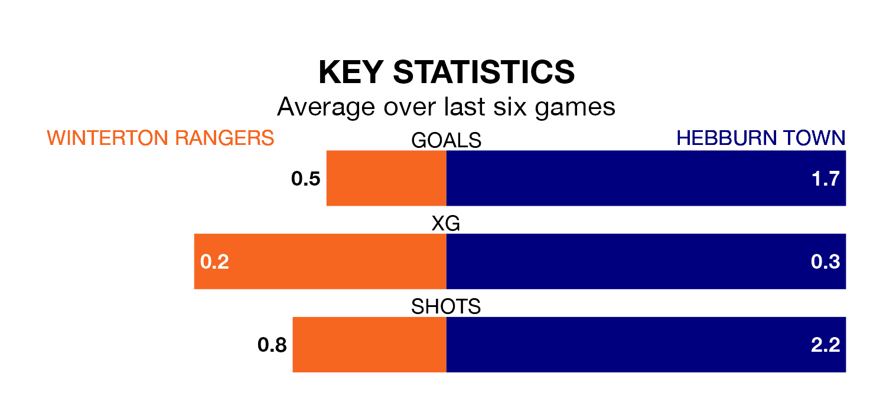

Hebburn Town travel to West Street for Saturday's match against Winterton Rangers looking to bounce back from defeat last time out in the Northern Premier League Division One East.
Hebburn, who sit second in the league after 19 games, fell to a 4-0 away defeat to Ashington AFC on December 26.
They face a Winterton side who also lost their last match, a 2-0 defeat to Bridlington Town, and who sit 19th in the table.
Winterton are in terrible form in the Northern Premier League Division One East, with no wins and a draw from their last six games.
With three wins and a draw over that period, Hebburn's form is much better – they have taken 10 points from 18, compared to Rangers' one.
With 18 goals in 21 games so far this season, the hosts are the league's lowest scorers with 0.9 goals per game. And they are conceding more than average, letting in 49 goals at a rate of 2.3 per game.
Town, meanwhile, are above average scorers, with 1.8 goals per game, compared to a league average of 1.6. They have conceded 1.3 goals per game.
Updated: 10:36, 03/01/24